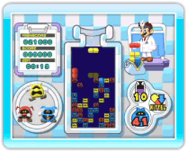

11 |
Grundlegende Regeln und Techniken |
 |

Für Dr. Mario und Bazillenjagd gelten die gleichen Regeln und das gleiche Spielprinzip: Bilde mit den in die Flasche fallenden Kapseln und gleichfarbigen Viren Reihen, um die Viren zu eliminieren. Sobald alle Viren ausgeschaltet wurden, erscheint ein Menü und du kannst wählen, ob du den nächsten Level spielen, den gerade gespielten Level erneut versuchen oder das Spiel beenden und zum Optionsbildschirm zurückkehren möchtest. Hinweis: Die Option NOCHMAL steht nur bei Bazillenjagd und im 1-Spieler-Klassisch-Modus von Dr. Mario zur Verfügung. ● Viren eliminieren Lass die Kapseln beim Fallen rotieren, um gleichfarbige Elemente zusammenzubringen. Wenn vier oder mehr gleichfarbige Elemente (Kapselteile oder Viren) eine horizontale oder vertikale Reihe bilden, verschwinden sie.
● Ketten und Kombos Wenn Viren und Kapseln verschwinden – also ausgeschaltet werden –, fallen übrig bleibende Kapselteile möglicherweise so, dass weitere gleichfarbige Reihen entstehen, die dann auch verschwinden. Dies ist eine Kette. Wenn du zwei oder mehr Gruppen von Kapseln und Viren gleichzeitig ausschaltest, erzielst du eine Kombo. Gelingt es dir, im Kampfmodus zwei oder mehr Gruppen mit einer Kette oder einer Kombo auszuschalten, so füllst du Müll in die gegnerische Flasche.
● Game Over Wenn die Kapseln den Flaschenhals erreichen und keine Kapseln mehr hineinpassen, ist das Spiel vorbei. Wähle in diesem Fall NOCHMAL oder ENDE. |


 |
 |
 |